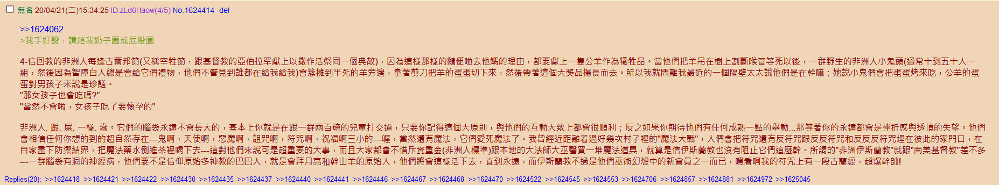
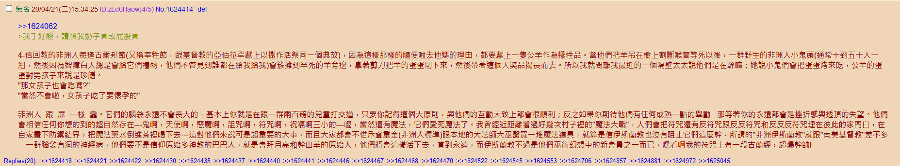

插曲
Bon Jovi «Out Of Bounds»A loaded gun needs no alibis
Out on the street where the truth's a lie
Wasted blood that I left behind
Broken hearts leave a young man blind
I need protection on the underground
I'm going down, down, down, down, down
Out of bounds
You can cross that line
Out of bounds
Is out of time
Out of bounds
Is where I'll be
I can't hold on but I can't break free
I'm going down, down, down, down, down
Out of bounds
Out of bounds
You're asking why but who's to say
The things you've known haven't gone away
Nowhere to run, no one to blame
I'm just a puppet in a bad man's game
I need protection on the underground
I'm going down, down, down, down, down
Out of bounds
You can cross that line
Out of bounds
Is out of time
Out of bounds
Is where I'll be
I can't hold on but I can't break free
I'm going down, down, down, down, down
Out of bounds
Out of bounds
So say a prayer for the innocent
It's the innocent who believe
You can't forgive what you can't forget
When that innocent man was me
Out of bounds
You can cross that line
Out of bounds
Is out of time
Out of bounds
Is where I'll be
I can't hold on but I can't break free
I'm going down, down, down, down, down, down, down
Down, down, down, down down
Out of bounds
Out of bounds
Out of bounds
……
注：可以与«Two Story Town»互相呼应。
素材
耍钱的朋友们奔走相告

09:30:24【印度也爆原油宝事件！94%交易量以-37美元清算 被起诉到高等法院】在WTI原油期货5月合约价格创纪录暴跌至负值之后，印度多种商品交易所（MCX）以每桶-2884卢比（约为-37.63美元，约合-268人民币）的价格来进行平仓，而这是印度大宗商品衍生品历史上前所未有的举动，据了解，MCX有全印度94%以上的原油期货交易量。据报道，一些经纪商已经向孟买高等法院提起诉讼，对于MCX确定的最终平仓价格提出了质疑。（每经）
14:53:05【高盛CEO将现身美剧《亿万》，扮演自己】索罗门参演的情节已于今年3月完成拍摄，如无意外，在将于5月开播的《亿万》最新一季中，观众可看到他的身影。
国际化大都市「华语第一精日论坛」
史前文明活化石


 


太阳底下没有新鲜事，国际一流和谐宜居之都部分「社区」就这样，亲眼所见亲耳所闻。正文当中都说过了，从大同唱着数来宝进京的丐帮就这样，那是并州鲜卑武德头顶「反共」籍贯盘踞幽州的一种表现形式。前言后记当中提到过作者个人经历，从小到大就是在这种迷宫地下城恶人谷的环境中生存。
而在其它随笔日记当中也提到了具体细节，包括但不限于家贼无论看我干什么都拆台扯后腿「有什么用啊」，反问「干什么有用」就回答「捞钱最有用」，追问「啥也不会怎么捞钱」就神秘的佛曰不可说不可说。每次我看书或实践，一刻钟不到准有家人或歹人打来电话骚扰，或者干脆敲门扯淡或推门就进唠叨。
至于逼着我喝脏水用地摊货，每天进来探头探脑翻箱倒柜，把我买来自用的东西拿走，换成不知道幕后黑手从哪儿弄来的假冒伪劣货，都是司空见惯。所以才会提高觉悟和警惕性，满嘴「你看咱家这情况吧」「你也就配这种档次」的家贼假惺惺的伪装成关心终身大事时所介绍的对象，有可能是什么好东西么？
所以，高举英特纳雄耐尔伟大旗帜为了世界人民大团结万岁的光荣目标而正确奋斗的党国栋梁青年才俊，尤其是叫嚣着坚持诡辩唯物主义不动摇的高学历精英，如果不能论证丐帮胎里坏的根本原因是鲜卑基因头顶生疮脚底流脓烂透了的劣根性，那就替我去询问幕后黑手吧，我不信素材当中描述的那种「史前文明活化石」的科技水平有能力24×7全方位巡查监视无死角，还擅长与时俱进的运用情报工学技巧动辄伸出一根小指头点一下鼠标炮制钦定死机以协助色目金融空头开无限杠杆。
大宋在自废武功这方面真是从来都没令人失望三易回河毁河北，杜充扒口毁河南。
汉唐时的两淮财赋之地，直接变成糜烂之地
明清两代给大送擦了几百年屁股
对了，扯福利的时候，你要是京城人，那就爽了。但你不是京城人，花石纲，三易回河这些可不是假的。宋实际上就是个半吊子的威尼斯，其他地方基本上都可以算是他的殖民地，但是偏偏他又玩的是半吊子，拿招募雇佣兵的钱去维稳，那可不就是活该挨揍嘛。
这不奇怪，因为宋本质上就是个建立在运河经济上的国家，为了保卫这个啥事都能做得出来。其他时候好歹还是封建领主和中央都要负责，大家想要鱼肉百姓，总不能把地都搞成荒地吧。就算是金元清都要在治理河道上花各种人力和物力，牵扯了无数的精力，虽然遗祸无穷，但是北宋这个政策确实一定程度上保卫了他们。
都是封建时代拿来那么多好玩意，宋的问题在于本质上就是个开封殖民全东亚的政权，算个猴版威尼斯，但是他也不敢全部甩责，就花了很大一部分军费去维稳了。然后野蛮人一入关，就白给了。
其实单单把开封列出来当一个城邦政权的话，宋无疑是蛮成功的，各大殖民地的资源钱财源源不断的流向城邦，难道不强嘛，还和一个北方的蛮族帝国对峙了百年。你对比下，是不是跟西方的观点蛮像的。
地方没钱是那时候人的共识，钱都被开封这个城邦拿到了，所以大家不把开封给打下来就无法改变这个局面。当野蛮人入关以后，直插经济中枢就把整个宋给瓦解了。宋作为开封殖民整个东亚的政权无疑是成功的，我们抛开立场来看，确实不错，连底层人民不断造反都没法改变情况，最后只亡于外敌之手，那对于局外者来说也是个吹点。
大家仔细想想，宋代以前的唐代，宋代之后的明代，哪个不是政府中的兵部管理军队实际事务的？只有宋代的兵部是个虚职，而真正掌握军队事务的是枢密院，真正掌握实兵的是三衙。由枢密院+三衙而形成实际的国防职能部门。
也就是说，国防部是个空的，真正掌握军权的是。。。。。。
……
五代时期，军人需要刺字，大家都知道吧？其实这并不是中国的特产，东罗马人和阿拉伯人的雇佣军也都是刺字的。其中，阿拉伯人是从东罗马人那里学会的，他们刺两手，一个手写姓名，一个手写特长。
南直隶「远东第一体育论坛」
中行态度变了，估计银保监会查到产品违规了九省通衢の煎蛋

匿名岛夷
配种了，配种了，五十块钱一回路透社援引知情人士報道稱，中國政府向平壤派出一個包括醫務人員在內的特殊代表團，去為疑似出現健康問題的朝鮮最高領導人金正恩提供咨詢。
现在的消息是国内派了队伍过去，金同志状况稳定一点了
假如真没了谁接班
他妹
没了就共和呗，总要走这一步的( ´_ゝ`)
当年金二的死讯可是隐瞒了五十二个小时。
然而21号就有扑街的消息了
这几天正好读西藏历史，第五世那啥死后，权臣可是秘不发丧十六年( ﾟ∀。)
新研究：瑞德西韦小鼠实验中有生殖毒性，严重影响精子质量喂鸡百科上说已经结婚了，孩子也有了
先前盛传金与正与崔龙海次子崔成（又译崔颂）于2014年秋天左右结为夫妇，金与正于2015年5月左右分娩
实验只对雄性小鼠做？
(ﾟ∀ﾟ)σ我都不知道怎么解释才能让你听得懂
( ﾟ∀。)不是拳师不是拳师，自己人
我就是看到标题里头说了雄性小鼠，就好奇一下对雌性有没有效
呵，这就是精盆屌癌掌权之后的结果。只治疗雄性小鼠对雌性不闻不问。女性什么时候才能站起来。
通篇下来都只提到雄性、精子。难道你们只关心男性的生殖能力吗？女同胞们的健康从来不会被你们放在第一位吗？气冷抖”
别打了，别打了，再打人都傻了( ﾟ∀。)
雌性小鼠也有O子的话也许就也会被提到了|∀` )
( ﾟ∀。)还不是蟈蝻压迫女性才没有的
阴谋论：疫情期间美帝第一时间送来了瑞德西韦
众多公知吹捧此药
难道是( ﾟ∀。)
科罗娜会影响生殖能力，瑞德西韦也会影响，这俩是串通好的?